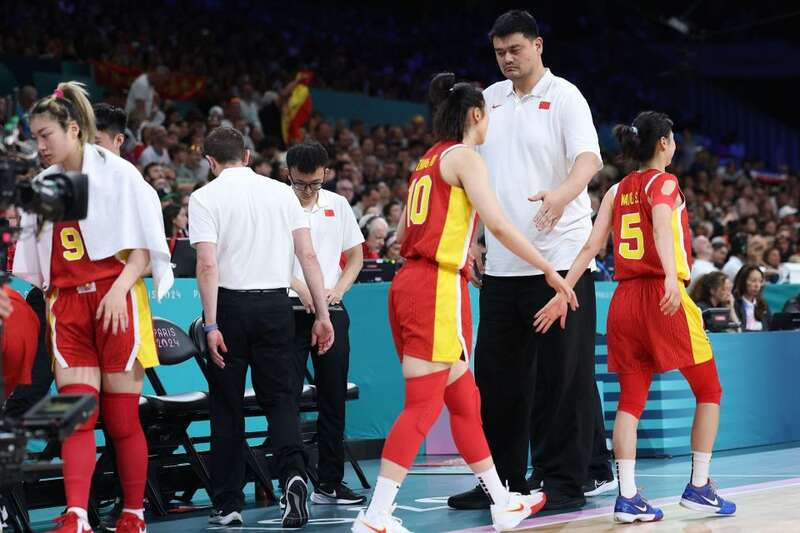
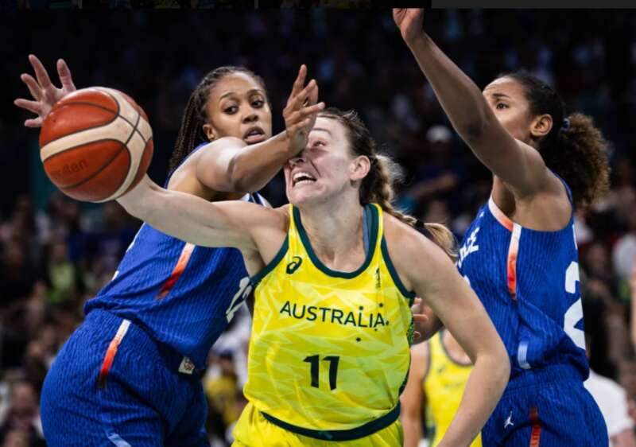
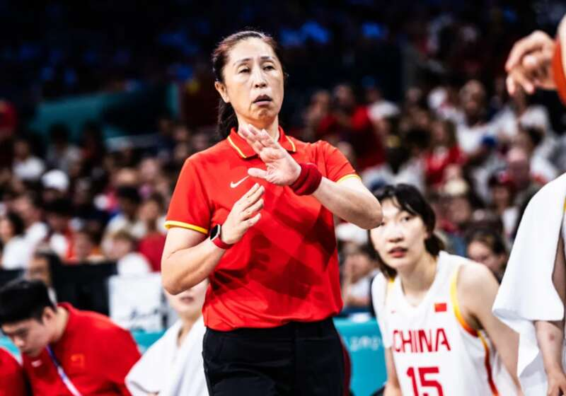

北京时间8月5日，随着法国女篮72-79不敌澳大利亚女篮，中国女篮无缘晋级八强，以1胜2负的战绩结束了巴黎奥运之旅。

此前，中国女篮已经以1胜2负的战绩结束小组赛征程，她们在首战89-90惜败西班牙，次战59-81不敌塞尔维亚，第三场比赛，中国女篮80-58大胜波多黎各。最终排在A组第三。李月汝场均17.7分11篮板，是中国队表现最出色的球员。
按照本次奥运会的竞赛规则，3个小组的前两名和两个成绩最好的第三名可以晋级8强，而比较小组第三成绩的规则为：1、小组积分；2、净胜分；3、得分；4、FIBA排名。
比利时女篮由于最后一轮27分大胜日本女篮，净胜分为0，超过中国女篮，先获得一个晋级8强的名额。法国女篮和澳大利亚女篮的比赛结果，直接决定中国女篮的命运。

两队上半场战成34平，澳大利亚女篮第三节爆发，单节打出25-16，虽然法国队末节一度缩小分差，但还是败下阵来。B组的法国队、尼日利亚队和澳大利亚队的小组赛成绩都是2胜1负，最终，法国第一，澳大利亚第二，尼日利亚第三。中国女篮小组赛只有1胜2负。中国女篮的小组积分不如B组第三，遗憾出局。

此前中国女篮一共曾参加过9届奥运会，其中6届成功打入八强，2届打入四强。值得一提的是，上届奥运会中国女篮小组赛面对波多黎各，澳大利亚，比利时取得全胜，但淘汰赛抽签抽到第二档的强队塞尔维亚，才遗憾止步1/4决赛。本届奥运会，中国女篮的表现明显下滑，确实需要好好总结经验，吸取教训。
Advertisements